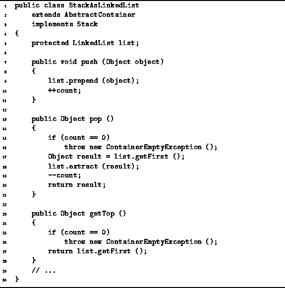

Data Structures and Algorithms
with Object-Oriented Design Patterns in Java
Data Structures and Algorithms
with Object-Oriented Design Patterns in Java
The push, pop, and getTop methods
of the StackAsLinkedList class
are defined in Program  .
.

Program: StackAsLinkedList class push, pop, and getTop methods.
The implementation of push is trivial. It takes as its argument the Object to be pushed onto the stack and simply prepends that object to the linked list list. Then, one is added to the count variable. The running time of the push method is constant, since the prepend method has a constant running time, and updating the count only takes O(1) time.
The pop method is implemented using two of the LinkedList methods--getFirst and extract. The getFirst method is used to obtain the first item in the linked list. The method getFirst runs in constant time. The extract method is then called to extract the first item from the linked list. In the worst case, extract requires O(n) time to extract an item from a linked list of length n. But the worst-case time arises only when it is the last element of the list which is to be extracted. In the case of the pop method, it is the first element which is extracted. This can be done in constant time. Assuming that the exception which is raised when pop is called on an empty list does not occur, the running time for pop is O(1).
The definition of the getTop method is quite simple. It returns the first object in the linked list. Provided the linked list is not empty, the running time of getTop is O(1). If the linked list is empty, the getTop method throws a ContainerEmptyException exception.
 Copyright © 1998 by Bruno R. Preiss, P.Eng. All rights reserved.
Copyright © 1998 by Bruno R. Preiss, P.Eng. All rights reserved.